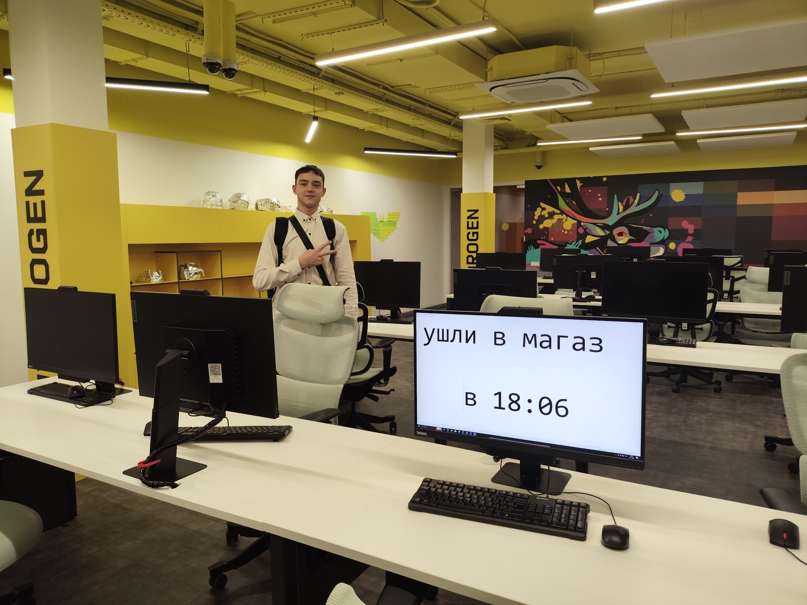
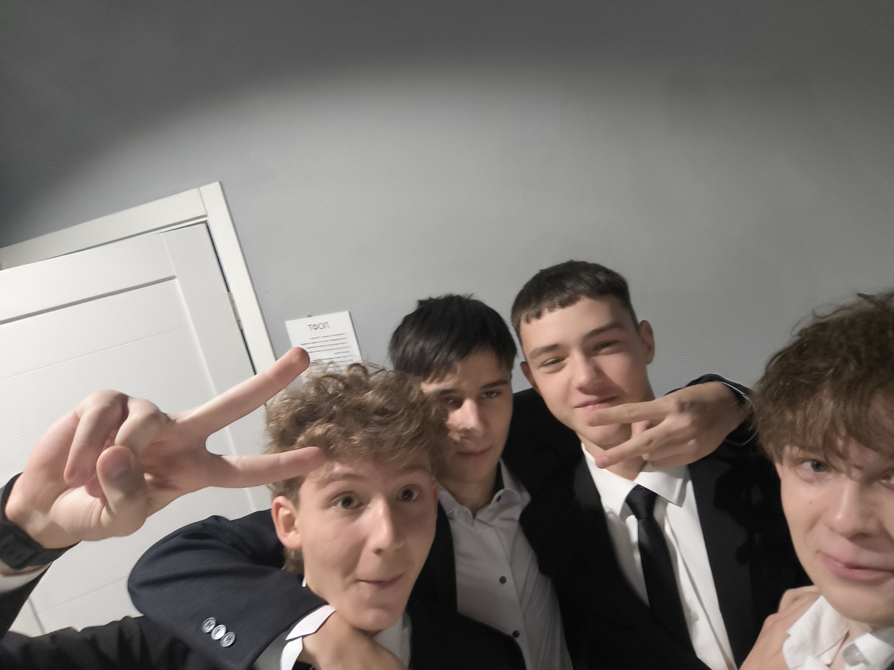

Фильтры
Очистим нашу планету от мусора вместе!
Как отметить на карте точку с мусором:
1. Найдите загрязненное место
2. Сфотографируйте и отправьте в нашего Телеграм-бота 📷
3. По необходимости напишите геолокацию 📍
Ваш взгляд меняет мир!
Наша команда - космиктех

Проектом занимались
Артюшкин Илья Олегович, Зиннаттулин Тимур Ахунович, Кирилюк Илья Денисович и Иоскевич Владимир Александрович.

Нашу команду связывает интерес к программированию и стремление развиваться в этой области, а так же стремление помогать окружающей среде и желание сделать мир чуточку лучше